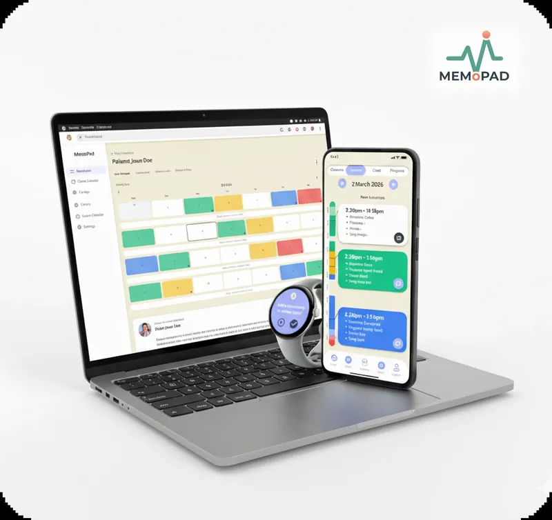
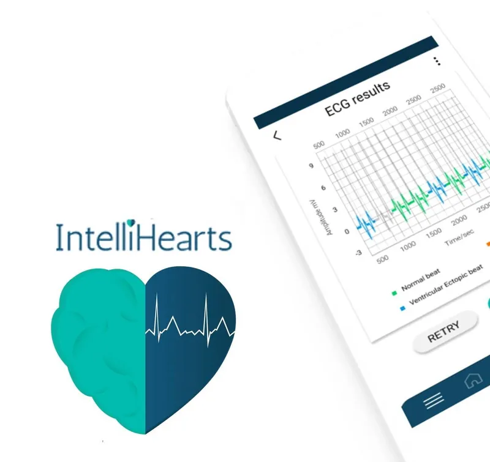
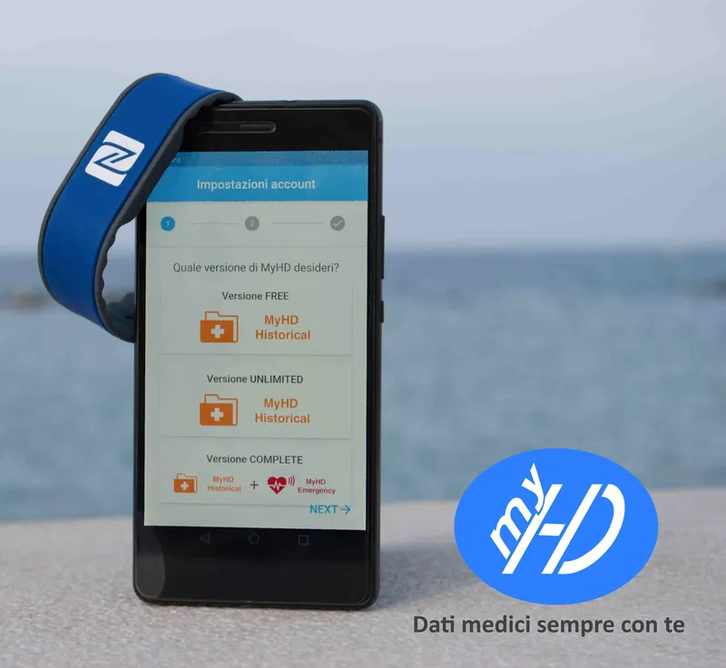

Luigi A. Moretti
Building Wearable Mental Health Technology
MD • MSc Health Tech • PhD Candidate

Scroll to explore
Building Wearable Mental Health Technology
MD • MSc Health Tech • PhD Candidate
I've watched people I care about struggle with mental health challenges in a system that struggles to provide adequate mental health care. We have sensors tracking physiological responses and user activities 24/7, but mental health care barely uses this data. That gap felt solvable, and deeply personal. So I pivoted from clinical medicine to building the technology that could bridge it.
My path hasn't been linear: medical doctor → healthtech founder → PhD researcher. Each step taught me something the previous couldn't. Medicine showed me what patients actually need (not what technologists assume). Startups taught me how to build products people use (not just research prototypes). My PhD is letting me do both, with rigour: co-designing wearable emotion monitoring with patients, carers, and clinicians to ensure it's clinically valid and genuinely useful.
I blend competencies too often kept separate: clinical insight, technical execution, and product thinking. I know why continuous skin-conductance (EDA) sensors matter for emotion detection. I know why patients need context, not just numbers. I know why clinicians won't adopt tools that add friction to their practice. And I know how to translate research into products that pragmatically solve real problems.


Multimodal Emotion Monitoring in Clinical Pathways for Anxiety Disorders
I'm developing a wearable emotion monitoring system using Google Pixel Watch 2 sensors (continuous electrodermal activity, heart rate, skin temperature) to help people with anxiety disorders understand their emotional patterns. The system captures real-world data and contextualizes it through mobile app interactions, providing insights for both patients and clinicians.
Co-designed with patients, carers, and NHS clinicians across 7 phases (6 completed), MEMoPAD ensures the technology is clinically valid, genuinely useful, and integrable into clinical pathways. This isn't just research, it's a functional prototype designed for real-world deployment.
The project bridges academic rigor with product thinking: published research validates the approach, while iterative co-design ensures people will actually use it. Six of seven co-design phases are complete, and I'm now writing up my PhD thesis.
Exploring how to bring this technology to millions of users - whether through continued research, industry partnerships, or building a company.
MEMoPAD Prototype: Patient interface showing sensor data visualization, emotion tracking, and contextual note-taking. Built through iterative co-design with real users.
From clinical medicine to health tech innovation. Each role taught me something the previous couldn't.

University of the West of England
HUG x Milbotix Sensory-Wearable Integration Study
October 2024 - February 2026
Working on an independent research project exploring integration of sensory comfort devices (HUG by LAUGH®) and smart wearable sensors (Milbotix smart socks) for physiological and emotional regulation monitoring.

University of Bristol
MaVi Sponsored Research Visit
May 2024 - October 2024
Selected for competitive sponsored research visit focusing on affective computing implementation for wearable mental health applications. Funded by MaVi (Machine Learning and Computer Vision Research Group).
University of the West of England
MEMoPAD Project
April 2023 - Present Thesis write-up
Building wearable emotion monitoring system for anxiety disorders using Google Pixel Watch 2. Co-designing with patients, carers, and clinicians to ensure clinical utility and real-world viability.

ASL Puglia - Regional Health Authority
COVID-19 Vaccination Hub
May 2021 - October 2021
Front-line clinical practice during pandemic peak. Managed up to 80 patient consultations daily in 12-hour shifts at region's largest vaccination center.

IntelliHearts - Healthcare Wearables Startup
November 2020 - September 2022
Built multi-class heart arrhythmia detection model first, and emotion recognition feature then, based on 1-lead ECG wearable. This project validated commercial demand and led to my PhD research direction.

La Sapienza University (Rome)
September 2020 - December 2020
Hired as digital health expert for gastroenterology research project developing 3D imaging solutions.

FabCraft / Climb3D - Digital Manufacturing Startup
January 2018 - December 2019
First entrepreneurial experience: Combined passion for rock climbing with 3D printing to create sustainable climbing holds.
From research presentations to working prototypes. Moments that define the path from clinical practice to digital innovation.

2023 - Present
Smartphone, wearable, and web app for emotion monitoring in anxiety disorders

2020 - 2022
1-lead ECG cardiac monitoring with emotion detection feature

2018 - 2019
Personal health records app - your health data always with you
2024
Presenting MEMoPAD idea at Elizabeth Blackwell Institute
2021
Pitching IntelliHearts wearable at the SMART Hackathon
2020
Presenting the healthtech startup I advised at Italy's innovation event
2020
Defending my Medical Doctor thesis in Clinical Medicine
2019
Pitching My Health Data at Italy's main research & innovation event
2018
Professional promotional video for my first startup
Funding secured, awards won, and milestones reached throughout the career journey so far.
£1,500 for patient and public involvement (PPIE) activities
August 2025
Grant for Louis Robinson, recruited during a presentation, to support prototype development
June 2025
£3,000 from UWE Bristol
December 2024
3.5-year funding + £3,000 project expenses
April 2023
€30,000 for FabCraft startup
2018
Studentship for MSc fees + salary
2021
Secured a smartsocks kit worth £1,000 to explore its potential in mental health
January 2026
Multimodal AI Workshop (Sheffield / Alan Turing Institute)
June 2024
University of Bristol
May-Oct 2024
COVID-19 Vaccine Safety Monitoring
2021
IntelliHearts startup pitch
2021
MyHealthData (MyHD) startup pitch
2019
PREDICT & BaLab: Mistral
2018
MEMoPAD: Multimodal Emotion Monitoring in Clinical Pathways for Anxiety Disorders - paper and interactive prototype demo
July 2026
Identifying emotion patterns in speech for Alzheimer’s disease assessment: A novel perspective - in Behavioral Biometrics and Artificial Intelligence for Neurodegenerative Diseases Assessment
June 2026
Towards deployment-centric multimodal AI beyond vision and language
October 2025
Co-Designing Human-Centered AI Technologies Workshop
November 2025
AUCO ResNet: an end-to-end network for Covid-19 pre-screening from cough and breath
July 2022
An Approach using transformer architecture for emotion recognition through Electrocardiogram Signal (s)
June 2023
A benchmarking study of deep learning techniques applied for breath analysis
June 2023
Clinical AI Scribes in primary care: accuracy, error severity and implications for clinical practice
September 2025
Affective Computing in Anxiety Disorders: Rapid Literature Review
February 2025
2 abstracts published at Digital Mental Health Conference
June 2024
Short paper in Engagement in Digital Health Interventions
April 2026
Mental Health Platform - research aligned with its aims and values
July 2026
Experimental Psychology Society
January 2025
Innovate Healthier Together (NHS BNSSG)
December 2024
Health Tech Hub, Bristol
October 2023
Presented MEMoPAD research at Ulster University
September 2024
Presented MEMoPAD research at Sheffield University
September 2024
Researcher Coffee Catch-up: Digital Solutions for Anxiety Disorders
July 2024
Elizabeth Blackwell Institute & Bristol Neuroscience Network
May 2024
Invited Speaker: Emotion Recognition for Neurodegenerative Diseases
November 2023
Italian National Startup and Research Competition
October 2019
Finishing my PhD thesis and exploring what's next. Open to product management and research scientist roles in wearable health, as well as collaborative opportunities in digital mental health innovation.